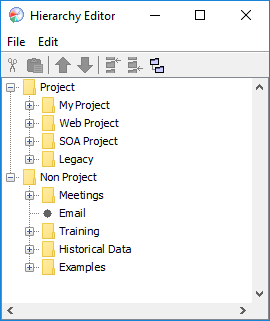
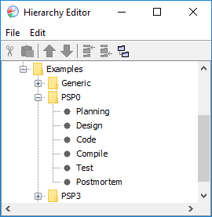
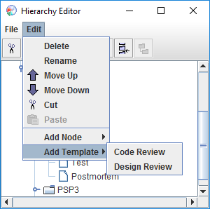
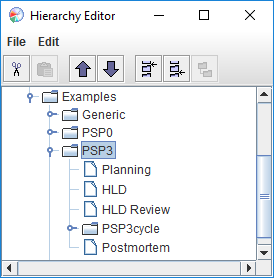
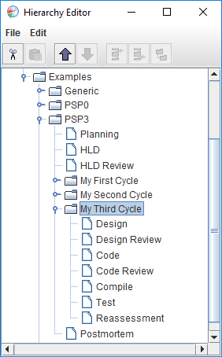

The Hierarchy Editor is an advanced tool for making manual edits to your project/task hierarchy.
Most people will never need to use the Hierarchy Editor. Instead, they will create projects (either personally or as part of a team), then use the Work Breakdown Structure Editor to edit the components and tasks within those projects.
For advanced users, the Hierarchy Editor is provided as a manual editing tool for:
The hierarchy editor can be opened by selecting the "Hierarchy" option on the Tools menu.
The Hierarchy Editor allows you to create and delete nodes in your project tree. You can create any arbitrary node structure to organize the different types of projects you are working on, and add component templates to the tree from the template files provided.

In this image, some child nodes have already been defined under both "Project" and "Non Project". You can click the "+" and "-" icons to expand or collapse the children under a given node.
The File menu provides the choices of Close, Save, and Revert. Their functionality is pretty self-explanatory: Close closes the editor, Save saves the changes to the dashboard project tree, and Revert will revert the project tree back to the state of the last save or to when the editor was opened.
The Edit menu provides some rudimentary editing control on the project tree. It provides the choices of Delete, Rename, Move Up, Move Down, Cut, Paste, Add Node, and Add Template. Several of these choices are duplicated on the Edit toolbar.
Delete will allow the deletion of a portion of the project tree. It deletes the selected node and all its children from the tree. Be careful; deleted nodes and projects cannot be revived once you save your changes. Deleted projects will no longer contribute to your historical data. Therefore, you probably don't want to delete projects unless they contain no real data. If you find that many historical projects are cluttering up your hierarchy, your best strategy is to create a node in your hierarchy called "Archived Projects," then use Cut and Paste to move completed projects there.
The Rename option will allow you to rename a node in the the project hierarchy. When you choose this option, the name of the selected node will appear as a text entry. You can type a new name and hit return to finish, or escape to cancel the name change. But note: some nodes cannot be renamed (such as the process elements for Planning, Design, Code, etc). Also, node names cannot contain the '/' character.
Move Up and Move Down alter the relative position of the selected node in the tree. The selected node will still have the same parent, but it will appear earlier or later in the list of children for that parent. This can help you to organize nodes to your liking - for example, to place them in the order you plan to work on them.
Cut and Paste can be used to move a node, component, or project from one part of the tree to another. Simply highlight the item you wish to move, and choose Cut. Then highlight the new parent for the item, and choose Paste. The cut node (and all its children) will be relocated underneath the new parent. You can then use Move Up and Move Down to reposition the node relative to its siblings.
The Add Node option on the Edit menu allows insertion of nodes into the tree. Nodes created in this way serve two general purposes:
Actual components themselves generally should not be added in this way, but can be added via Add Template (see below). The Add Node menu brings up a cascading second menu that provides the choices of Above, Below, and As Child. Again, these are pretty self-explanatory: Above will add a node to the tree as a sibling to the selected node, and will place it above the selected node; Below will also add a sibling node, but will place it below the selected node; As Child will add a node as a child of the selected node.
The Add Template option on the hierarchy menu allows insertion of a process template into the tree. Use this choice when you are ready to define a component. The Add Template menu brings up a cascading second menu that provides choices among the various defined processes. By default, two simple templates are provided: Generic and Timer. If you have installed the PSP process definitions, you will also see the 7 PSP process levels, along with Rollup PSP Data. If you have installed any other add-on process sets, other choices will appear as well. For more information about the processes and their scripts, see the process scripts help topic.
When you insert a component template into the hierarchy, it will initially have a generic name like "PSP2.1". You should feel free to change its name immediately to something more descriptive. (To make dashboard operation clear, this help document sometimes displays components with names like "PSP0", but such bland component names are neither required nor expected for actual use.)
When a process template is added, all the process phase elements that are defined for that process will be automatically added as children.

These process phases cannot be edited in any way (with a couple exceptions). If a process phase is selected and the Edit menu is clicked, the menu will show all entries greyed out and disabled. This is to protect the integrity of the processes themselves.
PSP processes PSP0 through PSP1.1 do not provide for design or code reviews, as those improvements are introduced in PSP level 2. However, the dashboard will allow you to add design and or code reviews to these low level PSP processes if you choose. If you pick on a component that was defined from the PSP0, PSP0.1, PSP1, or PSP1.1 process templates and then choose the "Add Template" menu you will see Design Review and Code Review choices. Either of these can be added to the process. They will be automatically inserted in the correct places in the process phase order.

Once you insert a Design Review or Code Review phase, it will appear in the process scripts and forms for the component. If you later change your mind and decide you don't want the review phase after all, you can highlight it and choose Delete from the Edit menu.
The PSP3 process is a cyclic development process. As such, it provides a basic structure for the whole component and also provides the ability to add development cycles. When a PSP3 process is added to the hierarchy, it will have the basic skeletal structure defined (Planning, High Level Design, High Level Design Review, and Postmortem phases), along with one PSP3 cycle.

Once you decide upon your cyclical development strategy, you should create additional cycles underneath the PSP3 component. Each of these cycles will contain the other PSP3 process phases (Design, Design Review, Code, Code Review, Compile, Test, and Reassessment). The PSP3 cycles are added just like the PSP3 component itself, via the "Add Template" menu. When a PSP3 based component is selected and the Edit menu is chosen, the Add Template menu item will have only one available choice: PSP3cycle. The cycle will be placed appropriately before the Postmortem step. You can input as many cycles as you would like in this manner.

Very much of the methodology that is employed by the PSP can be used in other endeavors. Any kind of work that has measurable time, size, and/or defects can probably benefit from a PSP-like process. The generic process template gives estimation, measurement, and defect tracking support for other work efforts.
When you create a component based on the generic process in the hierarchy editor, it will initially contain only a planning phase and a postmortem phase. You can then add additional phases (and give them any names that you want) by selecting the node corresponding to the generic component, then selecting "Generic Phase" from the "Add Template" menu:
The generic process then creates a tailored plan summary form. It allows entry of time and size estimates, and even lets you enter the unit of size measurement. For example, you could run the generic process to measure and track your progress as you write a technical paper. The size unit would end up being something related to the work of writing (perhaps pages). The generic process would capture your productivity rates and allow you to enter defects. If you have installed the add-on with PSP process materials, the Size Estimating Template and PROBE Wizard will also be available to provide support for the estimation process.
The timer process allows for estimating and measuring activities that have only a time aspect to them. If you regularly perform some kind of task that pretty much remains the same each time, you could record estimates and times for that task to attempt to provide some engineering discipline.